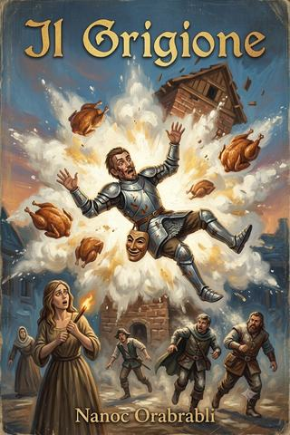

Regno di Taglia · racconto VI
Il Grigione
Alla Morte dei Marmi un fuocherello acceso «giusto per», con le migliori intenzioni, innesca il cataclisma che entra nella leggenda. La legge non scritta di Penumbria: più piccola è la causa, più grosso è il disastro.
- ≈ 50 min di lettura
- Nanoc Orabrabli
- dalle partite a Brancalonia
- anche in EPUB, 2,4 MB
«Ogni disastro comincia con qualcuno che dice: tranquilli, è un fuocherello.»
Prologo
C’è una legge, a Penumbria, che nessuno ha mai scritto perché nessuno fa in tempo: che la dimensione di un disastro è inversamente proporzionale a quella della causa che lo ha innescato.
Le grandi cause producono guai modesti. Una guerra fa qualche migliaio di morti, un’inondazione allaga una valle, una peste svuota una città: cose gravi, per carità, ma proporzionate, prevedibili, con un inizio grosso quanto la fine. I veri cataclismi, quelli che entrano nella leggenda e nei processi, cominciano invece sempre da niente. Da uno sternuto. Da una moneta caduta nel tombino sbagliato. Da un fuocherello acceso «giusto per», con le migliori intenzioni, da qualcuno che sapeva quello che faceva — il che, come vedremo, è la premessa indispensabile di ogni catastrofe che si rispetti, perché gli incompetenti, almeno, hanno paura, mentre gli esperti no, ed è l’esperto sicuro di sé il vero motore della fine del mondo.
Questa è, tra le altre cose, la storia di un fuocherello.
Un fuocherello piccolo, controllato, acceso per uno scopo preciso e ragionevole, da una persona che di fuochi se ne intendeva più di chiunque nella cricca; e di come quel fuocherello, nel giro di pochissimi istanti, sia diventato la ragione per cui, ancora oggi, a Morte dei Marmi, si racconta di un tetto che volò, di un tacchino che non poté più bestemmiare, e di una nuvola di farina che fece, tutta insieme, l’unica cosa che la farina, in fondo, ha sempre desiderato fare da quando esiste, e che nessuno le concede mai: esplodere.
Ed è, in particolare, la storia di una scaramante.
Perché tra i sette scalzacani ce n’era una che pretendeva il nome per intero — Giulia Maria Leonardo della Vega Assunta Incatenata, e guai a saltarne un pezzo — e che aveva un dono e una condanna, come tutti i doni che contano: vedeva i presagi. Li vedeva giusti, sempre; e li vedeva al momento sbagliato, sempre, così che nessuno le dava retta finché il presagio non si era già avverato, momento in cui tutti ricordavano di averla sentita e nessuno di averla ascoltata. E accendeva fuochi votivi — piccole fiamme di buona sorte, offerte ai santi apocrifi prima di ogni impresa — che avevano l’abitudine, ogni santa volta, di non restare votivi. Il suo fuoco benedetto diventava sempre fuoco vero. Era la sua firma nel mondo, e il mondo, prima o poi, le presentò il conto di quella firma, in una giornata di sole a Morte dei Marmi, sopra un mulino pieno di farina.
Comincia, come tutte le storie della cricca ormai lo sapete, con un favore facile. Ma stavolta il favore era davvero facile — questo è il bello, e il tremendo. Non dovevano uccidere nessuno. Anzi: gli fu detto, con insistenza, di non uccidere nessuno. «Occupato», gli fu raccomandato. «Occupato, non morto.»
Tennero fede alla consegna, tecnicamente. Non uccisero nessuno di proposito. Ma a Penumbria, come si è visto, la differenza tra ciò che si fa di proposito e ciò che semplicemente accade è un lusso da filosofi; e i filosofi, quel giorno, erano altrove — al sicuro, come sempre, dove si fanno le teorie, cioè lontano dal mulino.
1. La flotta e il Luffo
Le navi, finalmente, erano pronte.
Non una sola, stavolta, ma una piccola flotta, di cui il capitano Baffanera andava fiero come un padre di figli che non hanno ancora combinato guai — condizione, per una nave di Baffanera, statisticamente breve. C’era l’Arrembaggia, armata di cinque cannoni disposti tutt’intorno e veloce, anche se con poco spazio per l’equipaggio, il che a bordo generava un’intimità che nessuno aveva chiesto. E c’era la Peschiera di Allocchi, una nave da smerci illegali con doppi e tripli fondi, snella e rapida, mascherata da innocuo peschereccio; il nome, spiegò Baffanera con un occhiolino, era un omaggio ai doganieri, che erano gli allocchi, e alla peschiera, che era il posto dove finivano. Baffanera non vedeva l’ora di partire. Baffanera non vedeva mai l’ora di fermarsi, il che nei capitani è un tratto encomiabile e negli equipaggi una condanna.
Il capobanda, a Crimini, aveva bisogno di roba. Roba e gente: materiale, uomini, contatti, tutto ciò che serve a una banda per ingrandirsi, sparso lungo la costa in mille faccenduole da raccogliere. Il viaggetto sarebbe durato qualche mese. E la cricca — che ormai portava addosso i segni delle proprie avventure come una nave porta le cicatrici degli scogli — si imbarcò.
Erano cambiati, dai tempi in cui, poveri e speranzosi, davano la caccia all’argento su una nave fantasma. Non più ricchi — quello mai — ma più segnati, il che a Penumbria è l’unica forma di crescita disponibile. Truciolo portava la piega sulla guancia e una maschera alla cintura; Frasca portava, nascosti in tasca, i funghi che gli davano un posto dove stare e gli toglievano tutto il resto; Fra Tonio portava un repertorio di bestemmie ampliato e una collezione crescente di morti che non era riuscito a salvare; e tutti insieme portavano quella familiarità stanca e affettuosa delle cricche che hanno diviso troppi guai per potersi ancora sopportare e troppi per potersi lasciare. Erano una banda, ormai, non più un accozzaglia; il che è un progresso soltanto se si dimentica che le bande, a Penumbria, fanno una fine peggiore delle accozzaglie, perché hanno più da perdere.
Salparono su un mare buono, con QMV — la polena della prima nave, che nel frattempo aveva imparato a governarsi meglio — a fare da apripista, e per qualche giorno fu quasi bello. Poi comparve Morte dei Marmi, e con essa un tacchino, e la brevità della bellezza tornò a essere, come sempre, la sola cosa affidabile del Regno di Taglia.
Truciolo salì per primo, leggero come sempre, con la piega di legno colato sulla guancia sinistra che non se ne sarebbe più andata e che ormai teneva come si tiene una firma; e appesa alla cintura, a chiacchierare all’altezza sbagliata, la maschera Monastero, che appena vide il mare cominciò a raccontare pettegolezzi su ogni porto in vista con la competenza di cinquecento anni di ascolto e la delicatezza di nessuno.
«Morte dei Marmi», annunciò la maschera, dondolando contenta, quando il primo scalo comparve all’orizzonte. «Ah, quella sì che è una città con delle storie. Ci vendevano il marmo ai vivi e ai morti, e ai morti lo vendevano meglio, perché i morti non contrattano. C’è un mulino, laggiù, di cui potrei dirvi cose — ma non ora, che rovino la sorpresa.»
Nessuno le diede peso. Fu, come quasi tutte le cose che disse Monastero quel giorno, un errore.
A Morte dei Marmi dovevano raccogliere il Luffo.
Il Luffo era un tipo — «tipo» è la categoria in cui a Penumbria si archivia chiunque non si sappia bene come definire — che lavorava per il capobanda a certe faccende di prestigio e di sfizio, di quelle che i boss coltivano non per soldi ma per vanità, che nei potenti è più affamata dei soldi e costa di più a chi gli sta intorno. Doveva imbarcarsi con loro. Ma quando lo trovarono, il Luffo annunciò che no, non poteva ancora partire: aveva una missione da concludere per il capo, e senza quella non si muoveva. Anzi — e qui sorrise nel modo in cui sorridono quelli che stanno per rovinarti la giornata con un favore — aveva bisogno del loro aiuto.
La missione era vincere una gara.
Non una gara qualunque: la famosissima gara delle male parole bestiali di Morte dei Marmi, in cui certi animali favellanti — le bestie parlanti, che a Penumbria esistono e sono, in media, più eloquenti dei loro padroni — si sfidavano a colpi di insulti, come da miglior tradizione di taverna, davanti a una folla che scommetteva, beveva e giudicava, non necessariamente in quest’ordine.
Era, spiegò il Luffo, l’evento dell’anno a Morte dei Marmi: una città che campava di marmo per tombe e di conseguenza aveva un rapporto disinvolto con la morte e un bisogno acuto di ridere, sfogava tutta la propria voglia di vivere in quell’unica giornata di insulti sublimi. Si radunava gente da tutta la costa. Si scommetteva su tutto: sul vincitore, sul numero di santi bestemmiati, su chi sarebbe svenuto per primo tra il pubblico più devoto. C’erano un mulo che rimava, un gatto con un vocabolario osceno da far arrossire un nostromo, un pappagallo che aveva imparato le sue peggiori da un cardinale in disgrazia. E poi c’era il Grigione, contro cui tutti gli altri erano dilettanti, e sul quale, di conseguenza, non si scommetteva più: si scommetteva solo su quanto avrebbe vinto, che è ciò che accade ai campioni troppo bravi, i quali smettono di essere una gara e diventano un fenomeno atmosferico.
Il capobanda ci teneva a vincerla, per ragioni di prestigio e — sussurrò il Luffo — perché sull’esito, quest’anno, avevano puntato forte certi signori di Crimini che sui pronostici e sull’azzardo campavano, e che non gradivano perdere.1
Il problema era il favorito.
Il favorito si chiamava il Grigione.
Era un tacchino. Un tacchino favellante, grosso, grigio, tronfio, tre volte campione in carica, imbattuto da tre edizioni, e dotato di un talento raro perfino tra le bestie parlanti: sapeva comporre bestemmie. Non le bestemmie semplici, alla portata di qualsiasi carrettiere, ma le bestemmie composte — architetture blasfeme a incastro, con subordinate, rime interne e riferimenti dotti ai santi apocrifi, che lasciavano il pubblico tra l’ammirato e lo scandalizzato, che è esattamente il punto in cui il pubblico apre la borsa. Contro un artista simile, il concorrente del Luffo non aveva speranze. Nessuno ne aveva. Il Grigione avrebbe vinto la quarta edizione con la noia di un campione, a meno che — ecco il piano — non si presentasse.
«Non dovete ammazzarlo», disse il Luffo, e lo disse con una gravità che avrebbe dovuto insospettire chiunque conoscesse la cricca. «Chiaro? Non morto. La squalifica per morte fa scandalo, apre inchieste, e il capo non vuole grane. Vi basta tenerlo occupato. Fino al tramonto, quando c’è la sua esibizione. Se non si presenta, lo squalificano per assenza, e vince il mio. Semplice. Lo tenete occupato, e basta.» Li guardò uno per uno, come si guarda un branco di cui si diffida a ragion veduta. «Occupato. Non morto. Ripetetelo.»
«Occupato, non morto», ripeté la cricca, in coro, con l’obbedienza svogliata degli scolari che hanno già smesso di ascoltare.
«Occupato, non morto», ripeté anche Monastero, dalla cintura, con un’allegria che a Lucia — la scaramante, che proprio in quel momento sentì un formicolìo alla nuca, il suo, quello dei presagi — non piacque affatto. Perché c’è un modo in cui il destino ti fa ripetere una consegna semplice, insistendo, facendotela dire e ridire, che non è affatto rassicurante: è il modo in cui il destino prende nota di ciò che avrebbe intenzione, di lì a poco, di ribaltare.
Lucia lo disse. Disse: «Ragazzi, questa cosa del “ripetetelo” non mi piace. Quando una cosa è davvero facile, nessuno te la fa giurare tre volte.»
Aveva ragione, naturalmente. Aveva sempre ragione. Ed erano, come sempre, le tre di un pomeriggio troppo presto perché qualcuno le desse retta.
2. La caducità della vita
Sulla strada per il casolare del Grigione, la vita ricordò alla cricca, come fa ogni tanto, di essere breve, e di prendersela con chi meno se lo aspetta.
Successe così: stavano attraversando la piazza dei marmisti, dove a Morte dei Marmi si lavora la pietra dei morti — lastre, colonne, angeli con l’ala già pronta e il nome ancora da incidere — quando una di queste lastre, appena caricata su un carro e assicurata da qualcuno che evidentemente condivideva con la cricca l’idea di «assicurato», si mise in movimento per conto suo. Scivolò. E cadde, con la lentezza maestosa delle cose molto pesanti, esattamente nel punto in cui, un istante prima, c’era la testa di Fra Tonio, e in cui, grazie a uno strattone di Pierino, un istante dopo non c’era più.
La lastra si spaccò sul selciato con un fragore da giudizio universale, mancando il frate di un palmo, e su di essa — inciso, pronto, in attesa di un cliente qualsiasi — c’era già lo spazio vuoto per un nome e due date.
Ci fu un silenzio.
«Era libera», osservò Monastero, dalla cintura, guardando la lapide. «Prezzo di favore, per una consegna a domicilio così puntuale.»
Nessuno rise, il che per una battuta di Monastero era un successo raro.
Fu un piccolo intoppo, di quelli che a Penumbria capitano di continuo e non fanno storia. Ma ebbe l’effetto che hanno certi spaventi minimi: ricordò a tutti e sette, per il tempo di qualche battito, una cosa che di solito riuscivano a non pensare, e cioè che erano incredibilmente, disperatamente impreparati a morire — non perché la morte fosse più vicina del solito, ma perché non lo erano mai, pronti, e vivevano come se qualcuno, da qualche parte, tenesse per loro una riserva di tempo garantita, mentre l’unica cosa garantita, a Morte dei Marmi come altrove, era la lapide, che infatti stava già lì, pronta, con lo spazio per il nome.
Ognuno reagì a modo suo, cioè male.
Fra Tonio, scampato, bestemmiò un santo nuovo per l’occasione e poi lo pregò, nell’ordine, il che riassume la teologia dei miracolari meglio di qualsiasi trattato. Neuronio disse una cosa lucida e vera sul fatto che le cose che ci uccidono non sono mai quelle da cui ci difendiamo, e poi bevve, come sempre, per smettere di essere lucido, che era l’unico modo che conosceva di sopportarsi. Frasca, a cui lo spavento aveva messo addosso quel tremito che ormai lo prendeva nei momenti brutti, si frugò in tasca, tirò fuori un fungo secco — di quelli, sì, quelli del convento, che si portava dietro da mesi e che gli davano, per un istante, un posto dove stare — e lo masticò di nascosto, credendo che non lo vedesse nessuno. Lo videro tutti. Nessuno disse niente. Certi conti si lasciano aperti, tra compagni, per rispetto.
Monastero, dalla cintura, non lasciò passare l’occasione, perché le occasioni di dire una verità scomoda con eleganza sono, per una maschera, il pane quotidiano.
«Sapete qual è la cosa buffa dei vivi?» disse. «Che credono di avere tempo. Io, appesa a quel chiodo, di tempo ne ho avuto cinquecento anni, e vi assicuro che non è un dono: è una condanna. Ma voi, che ne avete pochissimo, lo sprecate come se ne aveste quanto me. Correte a fare i favori facili, litigate su chi paga da bere, rimandate le cose importanti a domani — e “domani”, per un vivo, è una parola che una lastra di marmo può cancellare in qualsiasi momento, come avete appena visto. Datemi retta, che di morti me ne intendo: fate le cose che contano oggi. Perché la lapide, il vostro nome, ce l’ha già scritto sopra. Manca solo la data. E la data, quella, la scrive il caos, e ha una calligrafia pessima e nessun preavviso.»
Fu, per una battuta di Monastero, insolitamente seria, e per questo nessuno seppe risponderle. Il difetto delle maschere che sanno tutto è che, ogni tanto, tra una freddura e l’altra, dicono una cosa vera, e la dicono nel momento in cui non la si può ignorare né sopportare.
E Truciolo guardò a lungo la lapide spaccata, e poi guardò altrove, verso il casolare in lontananza, da cui — gli parve — saliva un filo di fumo di camino. Il fumo non gli piaceva. A Truciolo il fumo non piaceva più da una certa notte su una certa nave, e da una certa altra notte in un convento; il fuoco, a lui, non faceva la paura degli altri, ne faceva una peggiore e più intima, e da quando portava la piega di legno sulla guancia — souvenir di legno colato di un’avventura che non è questa — aveva imparato a fidarsi ancora meno dei fili di fumo all’orizzonte. Ne annotò la posizione, senza dire niente. Fu, di tutta la cricca, l’unico a fare l’unica cosa saggia della giornata, e non servì a niente, perché una cosa saggia isolata, in mezzo a sei sciocchezze, viene travolta come un giusto in mezzo a una folla.
Lucia, invece, ebbe il presagio.
Le arrivò nel modo in cui le arrivavano sempre: non come una visione, ma come una certezza fisica, un peso, la sensazione precisa di aver già visto la fine di una cosa che non era ancora cominciata. Guardò il casolare, guardò il filo di fumo che aveva inquietato Truciolo, guardò le proprie mani — le mani che accendevano i fuochi votivi — e sentì, con la nitidezza dei suoi presagi mai sbagliati e sempre inascoltati, che quel giorno il fuoco lo avrebbe acceso lei. E che non sarebbe rimasto votivo.
«Ragazzi», disse. «Oggi non accendo niente. Qualunque cosa succeda. Se serve un fuoco, lo accende qualcun altro. Io oggi le mani me le tengo in tasca.»
Era, di tutte le decisioni prese quel giorno, la più saggia e la più giusta. La mantenne per circa due ore, il che, considerato tutto, fu quasi un record.
Perché il problema dei presagi di Lucia non era che fossero sbagliati. Il problema era che conoscere la fine non ti dice come evitarla: ti dice solo, con largo anticipo, verso cosa stai camminando; e camminarci verso sapendolo, come vedremo, non è affatto diverso da camminarci verso alla cieca, tranne per il fatto che fa più rabbia.
3. Il casolare e l’harem
Il casolare del Grigione era, per essere la residenza di un tacchino, sorprendentemente ben difeso, il che avrebbe dovuto suggerire alla cricca che quel tacchino valeva, per qualcuno, parecchio.
Sorgeva alla fine di un sentiero di campagna, e consisteva in un corpo basso — la casa vera e propria — addossato a una torre di mattoni a vista, alta tre piani, con una scaletta a pioli esterna che saliva fino a un tetto di legno. Era una costruzione strana, di quelle che nascono aggiungendo pezzi senza un piano, e la torre in particolare aveva l’aria di essere stata, in origine, qualcos’altro: un magazzino, un deposito, un mulino in disuso. Ma la cricca non era lì per la storia dell’edilizia locale, ed è un peccato, perché la storia dell’edilizia locale, quel giorno, era l’unica cosa che valeva davvero la pena di sapere.
Dentro e attorno al casolare c’era gente, e c’era baccano.
Il baccano lo facevano alcuni birri — quei manigoldi di mezza tacca che si prendono a guardia di ciò che non capiscono — e una donna, la proprietaria del Grigione, che li aveva evidentemente assoldati e che, insieme a loro, stava già festeggiando. Festeggiavano la vittoria. Non quella conquistata: quella annunciata, la quarta di fila, data ormai per scontata, perché il Grigione era imbattibile e loro avevano già scommesso e già speso, in anticipo, la vincita — abitudine diffusa a Penumbria, e infallibile nel portare sfortuna. Bevevano, ridevano, sbraitavano, e il rumore era tale che la cricca poté avvicinarsi al casolare quasi indisturbata, cosa che, notò Neuronio, era il primo colpo di fortuna della giornata, e quindi, per la legge di Penumbria, un debito che prima o poi qualcuno avrebbe saldato con gli interessi.
Si acquattarono dietro un muretto a secco, a studiare la situazione, e la studiarono con quel misto di acume tattico e di sostanziale incompetenza che era il loro marchio di fabbrica. Contarono i birri — sei, forse sette, difficile con l’andirivieni degli ubriachi. Individuarono la porta interna della torre, quella che dava sul cortile. Notarono la scaletta a pioli esterna. E si passarono, sottovoce, quelle osservazioni che nelle cricche precedono ogni piano e che, riascoltate dopo, suonano sempre come le ultime parole famose di qualcuno.
«Sono ubriachi», disse lo Scuro. «Un ubriaco è metà di una guardia.»
«Sette mezze guardie fanno tre guardie e mezzo», calcolò Pierino, che con i numeri aveva un rapporto tutto suo ma arrivava, per vie misteriose, a conclusioni sensate.
«E il tacchino?» chiese Fra Tonio. «Come si tiene occupato un tacchino senza ucciderlo? Gli leggiamo un libro? Gli facciamo conversazione?»
«Lo si spaventa», disse Neuronio. «Lo si prende e lo si porta via. Un tacchino portato via da qui e legato da qualche parte è, per definizione, un tacchino occupato e vivo. Il difficile non è tenerlo occupato. Il difficile è arrivarci, con tutte quelle mezze guardie in mezzo.»
E fu esattamente lì, sul «come arrivarci», che il piano cominciò a prendere la forma che lo avrebbe reso famoso — non per l’ingegno, di cui era discretamente fornito, ma per le conseguenze, di cui era, come tutti i piani della cricca, tragicamente all’oscuro.
Il Grigione, l’oggetto di tanta protezione, se ne stava nel cortile interno, e valeva lo spettacolo.
Era un tacchino enorme, grigio ardesia, gonfio di sé in un modo che nei tacchini è fisiologico e in lui pareva ideologico. Se ne stava impettito in mezzo al suo harem — una dozzina di tacchinelle che lo ammiravano con quella devozione acritica che gli artisti confondono sempre con il pubblico — e ripassava, a mezza voce, la sua esibizione della sera. E la sua esibizione era, bisogna riconoscerlo, arte. Perché il Grigione non bestemmiava come bestemmia un carrettiere: componeva. Le sue erano bestemmie architettoniche, con una premessa, uno svolgimento e una chiusa a effetto, che intrecciavano tre santi apocrifi in una sola invettiva senza mai ripetere un aggettivo, il tutto scandito da quel gloglottio di fondo che dava al blasfemo una cadenza quasi liturgica, come una messa cantata al contrario.
Perfino Fra Tonio, che di bestemmie era competente, si fermò ad ascoltare con l’espressione del professionista che riconosce, a malincuore, un talento superiore.
Il Grigione stava ripassando il pezzo forte, quello che gli aveva dato tre titoli: una bestemmia in tre movimenti, costruita come una cattedrale al contrario. Il narratore, per riguardo verso i lettori di buona famiglia e verso i santi apocrifi coinvolti, non la riporterà per esteso; ma ne descriverà l’architettura, che è ammirevole a prescindere dai mattoni. Cominciava con una premessa apparentemente devota, un elogio a San Guigno che pareva sincero e che il pubblico, ingannato, accompagnava con qualche «amen»; poi, nel secondo movimento, una subordinata inserita con la delicatezza di un borseggiatore rovesciava il senso dell’elogio senza cambiarne una parola, così che il complimento diventava, retrospettivamente, l’insulto più raffinato mai rivolto a un santo; e infine, nel terzo, una chiusa che tirava dentro altri due santi apocrifi e una capra, e chiudeva il tutto con una rima interna talmente perfetta che perfino gli offesi applaudivano, perché a Penumbria un’offesa in rima non è più un’offesa: è cultura.
Fu, dovette ammettere Fra Tonio, la cosa più bella e più blasfema che avesse mai sentito, e le due cose, in un miracolaro, si sommano invece di elidersi.
«È bravo», ammise, sottovoce. «È molto bravo. Quella cosa che ha fatto con San Guigno e la subordinata — io non ci arrivo. E ci provo da vent’anni.» Restò un momento in silenzio, poi aggiunse, con una malinconia che spiazzò tutti: «È l’ultimo, sapete. Di quelli capaci di comporre così, non ne restano. Quando un tacchino del genere se ne va, non se ne fa un altro. L’arte non ha figli: ha solo allievi, e gli allievi sono sempre meno bravi del maestro. È la sua tragedia, e la nostra.»
Non sapeva, Fra Tonio, quanto stesse profetizzando. Ma i miracolari, ogni tanto, azzeccano una profezia senza volerlo, di solito quella che avrebbero preferito sbagliare.
«Concentrati», disse lo Scuro. «Non siamo qui per la sua carriera. Siamo qui per rovinargliela.»
Fu allora che Monastero, dalla cintura di Truciolo, cercò di dire la cosa importante.
«Sentite», cominciò la maschera, con un tono diverso dal solito, meno sboccato e più urgente. «Quella torre. Io Morte dei Marmi la conosco, ci ho i pettegolezzi di cinque secoli. Quella torre era un mulino. E sotto la paglia, se non l’hanno svuotato, c’è ancora il—»
«Non adesso, Mona», disse Truciolo, che stava studiando la scaletta esterna e non aveva orecchie per la storia dell’edilizia. «Dopo. Dopo mi racconti del mulino.»
«Ma è proprio del mulino che—»
«Dopo», disse anche lo Scuro.
E Monastero, che in cinquecento anni aveva imparato l’unica lezione che conta per chi sa tutto — cioè che sapere non serve a niente se nessuno ti lascia finire la frase — tacque, offesa, e si tenne per sé l’informazione che avrebbe salvato la giornata. Non per dispetto: per rassegnazione. È la condanna di chi conosce le strade e non può prenderne nessuna, e di chi conosce i finali e non può cambiarli, di essere interrotto un attimo prima della parola che conta. La disse comunque, quella parola, molto piano, tra sé, mentre i sette pianificavano; ma la disse al vento, che è l’unico pubblico che le tocca sempre in sorte, alle maschere e alle scaramanti.
La parola era «farina».
Fine dell’Atto Primo.
4. Il bardo sul tetto
Il piano, in quel momento, non esisteva ancora, il che non impedì alla cricca di cominciare a eseguirlo, secondo la sua consolidata abitudine di agire prima e capire poi.
Cominciò Frasca. Frasca, oltre a essere un druido, un misantropo e un tossico di funghi, aveva un piccolo talento da benandante che tirava fuori una volta ogni tanto: sapeva imitare i versi delle bestie. Non benissimo — le sue imitazioni avevano sempre un che di sarcastico, come se la bestia imitata fosse anche presa un po’ in giro — ma abbastanza da ingannare l’originale. Si mise dunque, per curiosità e per noia, a imitare il gloglottio del tacchino, rivolto alla torre.
E la torre gli rispose.
Dall’alto, da dietro le finestrelle del piano superiore, arrivò un coro di gloglotti — femminili, entusiasti, numerosi. Il che significava una cosa sola: che nella torre non c’era solo il Grigione a fare da spauracchio nel cortile. C’erano altri tacchini. Molti. Probabilmente il grosso dell’harem, tenuto al sicuro in alto mentre il campione si esibiva in basso.
«C’è un pollaio, lassù», disse Frasca, soddisfatto della propria scoperta e già pentito di averla condivisa gratis.
«Andiamo a vedere», disse Truciolo.
Toccò a Truciolo, naturalmente, perché Truciolo era leggero, e i tetti di legno reggono i pupi meglio degli uomini, e perché di tutta la cricca era l’unico abbastanza incosciente da arrampicarsi su una scaletta a pioli esterna in pieno giorno con dei birri ubriachi a venti passi. Salì con quella disinvoltura da ladro che aveva anche di notte, portandosi dietro Monastero che gli dondolava alla cintura protestando sottovoce per il metodo di viaggio.
«Piano», sibilò la maschera. «Piano, che non ho gambe e mi sbatti dappertutto. E comunque, già che siamo qui, quella torre—»
«Mona.»
«Va bene, va bene. Ma poi non dire che non ho provato.»
«Lo senti?» sussurrò Monastero, mentre Truciolo si sdraiava sulle assi. «Quest’odore. Io non ho naso, ma cinquecento anni di cucina te lo insegnano lo stesso a riconoscerlo. È odore di macinato. Di mulino. Legno, ragazzo mio, io in un posto così ci lavorerei attenta. Un posto pieno di questo odore e con un fuoco vicino è un posto dove—»
«Mona, sto lavorando.»
«Anch’io lavoravo. Poi mi hanno appesa a un chiodo per cinque secoli. Guarda dove porta, il lavorare.»
Truciolo non rispose, il che con Monastero non era una difesa ma solo un rinvio, e cominciò a spiare tra una trave e l’altra, attraverso i pertugi che il tempo e l’incuria avevano aperto nelle assi. Sotto di sé, al piano immediatamente inferiore, vide quello che si aspettava e qualcosa di più: c’era del pagliericcio — molta paglia, ammucchiata, di quella che si usa per far covare le bestie — e su quella paglia razzolavano diversi tacchini, tranquilli, ignari, a beccare e gloglottare nel tepore. Un pollaio in una torre. Niente di strano.
Quello che non vide — perché era sotto, sotto il pavimento di paglia, al piano ancora inferiore, dove il buio era fitto e i pertugi non arrivavano — era il resto. Il resto che Monastero conosceva e che nessuno l’aveva lasciata dire: che quella torre era stata un mulino; che sotto la paglia c’era ancora il frantoio; e che intorno al frantoio, in sacchi sfondati e in un pulviscolo fine depositato su ogni superficie da anni di macinatura, c’era la farina. Tanta farina. La farina che aspetta, paziente, nell’aria di ogni mulino del mondo, l’unica occasione della sua vita.
Truciolo vide la paglia e i tacchini, e ne dedusse — correttamente, per quanto poteva vedere, e disastrosamente, per quanto non poteva — che la torre era un pollaio con dentro delle bestie e sotto delle bestie e sopra un tetto di legno su cui lui, in quel momento, era comodamente sdraiato.
Riferì quello che aveva visto. Riferì la paglia. Riferì i tacchini. Non riferì la farina, perché non la vide; e non la vide perché nessuno aveva lasciato parlare l’unica creatura che sapeva, il che, a Penumbria, è il modo standard in cui l’informazione decisiva non arriva mai a destinazione: non viene nascosta, viene solo interrotta.
Fu sulla base di quel rapporto incompleto — paglia, tacchini, tetto di legno — che la cricca, radunata sotto la torre, mise a punto il piano.
Un piano perfetto. Erano sempre perfetti, i piani della cricca, nel breve intervallo tra il momento in cui li concepivano e il momento in cui la realtà se ne accorgeva. Questo, in particolare, aveva l’eleganza fatale delle cose costruite su una premessa sbagliata: era logico, era pulito, teneva conto di tutto ciò che sapevano — e non teneva conto dell’unica cosa che non sapevano, che è sempre quella che conta, e che quel giorno pesava, si potrebbe dire, come una torre piena di farina.
Truciolo, dal tetto, guardò giù verso i sei compagni che gesticolavano attorno a Lucia, e sentì, nel legno cavo del petto, il vecchio formicolìo. Ma era troppo in alto per sentire cosa dicevano, e troppo pupo per immaginare che, di lì a pochi minuti, quel tetto su cui era sdraiato sarebbe partito per un viaggio molto rapido e molto verticale, portandoselo dietro.
5. Il piano perfetto
Il piano, come tutti i piani perfetti della cricca, aveva tre mosse, ed era la terza a essere di troppo.
La prima mossa era lo Scuro. Lo Scuro si sarebbe reso invisibile — aveva quel trucchetto da guiscardo, e lo teneva per le occasioni in cui l’incompetenza ordinaria non bastava — e sarebbe entrato nel casolare, avvicinandosi al Grigione senza che nessuno lo vedesse. Era già dentro, in effetti, mentre gli altri discutevano: sfumato nell’aria, appostato in un angolo del cortile, a pochi passi dal tacchino e dal suo harem, in attesa del segnale. Il suo compito era semplice e in linea con la consegna: afferrare il Grigione, portarlo via, tenerlo occupato — legato, imbavagliato, nascosto — fino al tramonto. Non morto. Occupato.
La seconda mossa era la distrazione. Perché tra lo Scuro invisibile e il Grigione c’erano i birri, sparsi per il cortile e sulla porta interna della torre; e finché i birri restavano lì, anche un ladro invisibile rischiava di farsi scoprire, che è la beffa dell’invisibilità: ti rende difficile da vedere, non impossibile da urtare. Serviva qualcosa che li togliesse di mezzo, che li facesse correre altrove tutti insieme. Serviva — concluse Neuronio, con la lucidità che gli veniva sempre un attimo prima di sbagliare — un piccolo allarme. Un fuocherello nella paglia della torre, visto da fuori: i birri, per non far bruciare il pollaio e la scommessa, avrebbero spalancato la porta interna e sarebbero corsi a spegnerlo, lasciando via libera allo Scuro.
La terza mossa era accendere quel fuocherello. Ed era, si è detto, quella di troppo.
Dentro il casolare, invisibile, lo Scuro aspettava, e imparava a proprie spese una cosa sull’invisibilità che nessuno gli aveva detto: che è molto più angosciante di quanto sembri. Perché un invisibile vede tutto e non può reagire a niente senza tradirsi; è costretto all’immobilità di un fantasma con l’ansia di un vivo. Se ne stava rannicchiato in un angolo, a un passo dai birri che sbraitavano ubriachi, a tre passi dal Grigione che ripassava le sue bestemmie, e contava. Contava i respiri, i passi, i secondi al segnale. E più contava, più cresceva in lui quella sensazione professionale che ai ladri viene un attimo prima dei guai: che il piano avesse un buco. Non sapeva quale. Sapeva solo che c’era, perché c’è sempre, e che stava esattamente nel punto che nessuno aveva controllato.
Guardò il pavimento su cui era accovacciato. Era coperto di una polvere bianca, fine, che si alzava a ogni passo dei birri e restava sospesa nell’aria del cortile come una foschia impalpabile. La notò, quella polvere, con la coda dell’occhio del ladro, e per un istante — un solo istante — pensò che strano, tutta questa farina. Poi il pensiero passò, come passano i pensieri giusti quando arrivano nel momento in cui non serve più averli; e lo Scuro tornò a contare i secondi, senza sapere di essere seduto, invisibile, esattamente dentro il buco del piano.
«No», disse Lucia.
Lo disse subito, ferma, prima ancora che finissero di spiegare. «Ve l’ho detto stamattina. Oggi io non accendo niente. L’ho sentito. Il fuoco, oggi, lo accendo io, e non resta piccolo. Fatelo fare a un altro. Fatelo fare a nessuno. Cambiamo piano.»
«Lucia», disse Neuronio, con dolcezza, «è un fuocherello. Nella paglia. Lo spengono in un minuto. È tutta la questione: che sia piccolo e che si spenga in un minuto.»
«È esattamente quello che dico anch’io ogni volta», disse Lucia, «un attimo prima che prenda tutto.»
Provarono a farlo fare a Frasca. Frasca prese il tizzone — un carbone acceso dal fuocherello da campo — e si avvicinò alla finestrella della torre con la grazia di un druido a cui hanno appena affidato l’unica cosa che un druido non dovrebbe maneggiare, e cioè il fuoco vicino alla paglia. Lo tenne male. Lo tenne come si tiene una cosa che scotta e che si vorrebbe già aver lanciato, e nel gesto sbagliato di lanciarlo troppo presto per liberarsene per poco non lo fece cadere sui propri piedi, poi sul mantello, poi — con un ampio gesto scomposto — verso Pierino, che lo schivò con un’agilità sorprendente per la sua mole.
E Lucia, guardando quello scempio, non resse.
Perché era una scaramante, e i presagi le dicevano di non farlo; ma era anche, e prima di tutto, una piromane rituale, e c’è una cosa che una piromane non sopporta più della propria stessa maledizione, ed è veder maneggiare male il fuoco. Vedere Frasca palleggiarsi un tizzone acceso vicino a una torre piena di paglia le fece lo stesso effetto che fa a un maestro d’armi vedere un bambino agitare una spada carica: l’istinto, più forte di ogni presagio, di togliergliela di mano e farlo bene.
«Dammelo», disse. «Dammelo prima che ci ammazzi tutti con la tua goffaggine. Se proprio si deve fare, lo faccio io. Piccolo. Controllato. Come si deve.»
Prese il tizzone. E nel prenderlo — questa è la parte che il narratore riferisce con un certo dolore — sapeva. Sapeva perfettamente che stava facendo la cosa che il presagio le aveva vietato, la cosa che si era ripromessa di non fare, la cosa che avrebbe rimpianto. Ma la fece lo stesso, non per obbedienza né per stupidità, ma per l’unica ragione per cui a Penumbria si fanno quasi tutti gli errori decisivi: perché farla male qualcun altro le sembrava peggio che farla bene lei. È l’orgoglio dei competenti, ed è la trappola perfetta, perché ti fa scegliere la strada per il baratro convinto di essere l’unico abbastanza bravo da percorrerla in sicurezza.
Prima di accendere, fece la sua piccola cerimonia.
La faceva sempre, prima di ogni fuoco: un gesto, una parola sussurrata a un santo apocrifo, una richiesta di protezione. Era la sua illusione, e ci teneva: che un fuoco benedetto, offerto con le parole giuste, restasse mansueto. Non restava mai mansueto. Ma la cerimonia la faceva sentire in controllo, e il senso di controllo, come tutti sanno, è precisamente ciò che precede le catastrofi, mai ciò che le evita.
Sussurrò il nome di Santa Ustiona, patrona apocrifa dei fuochi che si spengono da soli — invocazione ottimista, e mai esaudita a memoria d’uomo — e avvicinò il tizzone alla paglia che spuntava dalla finestrella.
Dal tetto della torre, dove dondolava ancora alla cintura di Truciolo, Monastero capì. Vide dall’alto il tizzone avvicinarsi alla paglia, mise insieme cinque secoli di pettegolezzi e la pianta di quel vecchio mulino, e gridò l’unica frase utile di tutta la giornata, con tutta la voce che una maschera di legno può mettere insieme, sporgendosi dalla cintura verso il vuoto:
«FERMI! Sotto la paglia c’è la FARINA! È un mulino! Fermatevi, disgraziati, salterà t—»
Ma dal tetto al cortile ci sono tre piani, e il vento portava via le parole, e comunque era, come sempre, le tre di un pomeriggio troppo tardi. Truciolo, sdraiato accanto a lei, fece appena in tempo a sentire la parola «farina» e a pensare che non gli piaceva, senza capire perché. Il tizzone toccò la paglia.
Fine dell’Atto Secondo.
6. La farina
Bisogna capire una cosa sulla farina, per rendere giustizia a quello che successe, ed è una cosa che la farina tiene nascosta con l’ipocrisia delle sostanze mansuete.
La farina, in sacco, è la più innocua delle materie. Ci fai il pane. Ci fai la festa. La regali ai poveri. Nessuno, guardando un sacco di farina, ha mai pensato «pericolo». Ma la farina in sacco è farina domata. La farina sospesa — quella sottilissima, impalpabile, che in ogni mulino galleggia da anni nell’aria e si posa su ogni trave, ogni sacco, ogni ragnatela, come una nevicata che non cade mai — è un’altra creatura del tutto. È farina che aspetta. E ciò che aspetta, da quando esiste il primo mulino del mondo, è una scintilla; perché la farina sospesa, a contatto con una fiamma, non brucia: deflagra. Diventa, in un istante, tutta insieme, la cosa più simile a una polvere da bombarda che la natura offra a chi non ha una bombarda a portata di mano.
Nella torre del Grigione, di farina sospesa, ce n’erano cinque secoli.
E Lucia, con la sua piccola cerimonia, il suo tizzone controllato e la sua invocazione a Santa Ustiona, aveva appena portato una fiamma esattamente lì.
La paglia prese per prima, come previsto. Per un istante — un solo, ingannevole istante — il piano funzionò alla perfezione: un fuocherello arancione salì dalla finestrella, allegro e contenuto, esattamente come Lucia lo aveva voluto, esattamente come Neuronio lo aveva descritto. I birri, nel cortile, lo videro, gridarono, e si precipitarono verso la porta interna della torre per spegnerlo prima che bruciasse il pollaio e la scommessa. La distrazione funzionò. Lo Scuro, invisibile, si mosse verso il Grigione. Per un battito di cuore, la cricca stava vincendo.
Poi il fuocherello, mangiata la paglia, scese. Trovò il piano sotto. Trovò il frantoio, i sacchi sfondati, e — soprattutto — trovò l’aria: quell’aria bianca, densa, invisibilmente carica, che aspettava da cinque secoli qualcuno abbastanza distratto da accendere un fuoco in un mulino.
E la farina fece l’unica cosa che la farina sospesa abbia mai desiderato fare.
Esplose.
I minuti successivi, a raccontarli, durano più di quanto durarono, che è il privilegio della narrazione sulla realtà: nella realtà fu tutto insieme, un unico boato bianco che Morte dei Marmi sentì fino al porto.
Il tetto di legno della torre — con sopra Truciolo, sdraiato, e Monastero appesa alla sua cintura — fu proiettato in aria. Non «sollevato»: proiettato, sparato, lanciato a diverse decine di metri come un tappo da una bottiglia scossa dal caos in persona. Truciolo, che del fuoco aveva la paura più intima e più antica, che dal fuoco non era ferito ma disfatto, si trovò per un istante interminabile al centro esatto di una palla di fuoco bianca, volando, senza niente sotto e il terrore di sempre dentro — e in quell’istante non pensò «sto per morire», perché i pupi non pensano così; pensò, con la lucidità gelida della paura pura, ecco, adesso mi disfo, e chiuse gli occhi di legno in attesa di smettere di essere.
Non si disfece. Volò, ricadde in un campo di grano tenero venti passi più in là, si conficcò nel terreno a testa in giù come una freccia mal lanciata, e restò lì, intero, tremante, incredulo di esserlo. Accanto a lui, appena atterrata, Monastero — che era ignifuga, che il fuoco non poteva toccare, l’unica creatura al mondo su cui una deflagrazione di farina non aveva alcun potere — se ne stava serena tra le spighe, leggermente affumicata e per niente danneggiata, e disse, con la calma spaventosa di chi aveva avvisato:
«Farina. L’avevo detto. Fa-ri-na. Ma no, “dopo, Mona”, “non adesso, Mona”. Eccolo, il dopo. Com’è, il dopo? Ti piace?»
Truciolo, a testa in giù nel grano, non ebbe la forza di risponderle. Fu, di tutta la loro amicizia, l’unica volta in cui Monastero ebbe l’ultima parola e non ne godette, perché perfino una maschera capisce quando l’aver avuto ragione non è una vittoria ma solo un’altra forma di solitudine.
Il resto della torre e del casolare visse la sua frazione di secondo di gloria terribile.
I tacchini — tutti, l’harem intero, le dodici della torre e le dodici del cortile, il Grigione compreso — furono cotti sul posto, istantaneamente, flambé, in quella maniera che i cuochi passano la vita a cercare di ottenere con delicatezza e che la farina ottenne in un colpo solo con nessuna. Fu, dal punto di vista puramente culinario, la più grande e più involontaria preparazione di tacchino arrosto nella storia di Morte dei Marmi; e se qualcuno avesse avuto la freddezza di raccoglierli, ci sarebbe stato da sfamare un villaggio. Nessuno ebbe quella freddezza. Nessuno ha mai appetito, subito dopo un’esplosione, tranne Pierino, che però quel giorno era occupato a non essere morto.
Del Grigione, il campione, l’ultimo maestro delle bestemmie composte, si dice — e lo dice chi c’era, cioè nessuno di attendibile, il che a Penumbria è garanzia di verità — che stesse componendo, proprio in quell’istante, la sua opera più ambiziosa: una bestemmia in quattro movimenti, mai tentata prima, che avrebbe intrecciato tutti e cinque i santi apocrifi maggiori in un’unica invettiva a incastro, e che secondo gli intenditori sarebbe entrata nella storia. Non la finì. Arrivò, dicono, al terzo movimento — quello con la subordinata su Santa Zitellona — e poi la farina fece la sua entrata, e la quarta strofa, quella che avrebbe consacrato per sempre l’arte del tacchino, se la portò via insieme all’artista, incompiuta, sospesa nel nulla come tutte le opere massime che il caos, con il suo tempismo infallibile, interrompe un attimo prima della chiusa. C’è chi giura che, nel boato, per una frazione di secondo, si sia sentito un ultimo, indignato gloglottio: non di paura, ma di rabbia professionale, l’urlo di un artista a cui interrompono il capolavoro sul più bello. Fu, se davvero ci fu, l’epitaffio più giusto che potesse avere: morì offeso, non spaventato, che è l’unico modo dignitoso in cui un genio possa lasciare un pubblico indegno di lui.
Dei birri, la metà che si trovava più vicina alla porta interna — quelli corsi a spegnere il fuocherello — morì male, in fretta, senza fare in tempo a capire di aver perso una scommessa molto più grossa di quella sul tacchino. L’altra metà, più lontana, se la cavò con ustioni, contusioni e quel ronzio nelle orecchie che, dopo certe giornate, non se ne va per settimane e ti ricorda, ogni notte, che eri lì. La proprietaria del Grigione, sbalzata contro un muro, sopravvisse per raccontare a Morte dei Marmi una storia che nessuno le credette e che era, per una volta, esattamente vera: che il suo tacchino imbattibile era stato battuto, all’ultimo, da una nuvola di farina e da sette forestieri, uno dei quali era di legno e volava.
E la cricca — questo è il miracolo osceno di tutta la faccenda, quello che a Morte dei Marmi si racconta ancora con l’incredulità che merita — ne uscì praticamente illesa. Sette scalzacani nel raggio di un’esplosione che aveva ucciso mezza dozzina di uomini e due dozzine di tacchini, e loro sette in piedi, storditi, affumicati, con le sopracciglia in meno e la vita in più, salvati da quella combinazione di fortuna cieca e faccia tosta che a Penumbria fa le veci della provvidenza, perché la provvidenza vera, da quelle parti, ha smesso di fare straordinari da secoli.
7. Prima che facciano due più due
Lo Scuro, che al momento dell’esplosione era invisibile e a due passi dal Grigione, fu ritrovato poco dopo in un fosso, di nuovo perfettamente visibile — perché l’invisibilità, come molte cose delicate, non sopravvive a una deflagrazione di farina — e con l’espressione di un uomo che stava per afferrare un tacchino e si è ritrovato, senza soluzione di continuità, a venti passi di distanza dentro un fosso, senza il tacchino, senza le sopracciglia, e con la spiacevole certezza di aver appena assistito, in prima fila e da invisibile, alla cosa più stupida della propria carriera.
«Occupato», disse, quando lo tirarono su. «Ci avevano detto occupato, non morto.»
«Tecnicamente», disse Neuronio, con la lucidità che gli restava attaccata anche in mezzo alle catastrofi, «adesso è occupatissimo. È occupato a essere cotto. Non gli è mai capitato niente di più assorbente in vita sua.»
«Non è divertente», disse lo Scuro.
«No», ammise Neuronio. «Ma se non lo dico adesso, poi mi tocca pensare a cos’è successo davvero, e preferisco di no.»
Ricomposero la cricca nel campo di grano, contandosi con l’ansia di chi ha appena visto una torre volare: e furono sette, il che, come su una nave, fu accolto come un buon auspicio e come una piccola ingiustizia cosmica, perché sette scalzacani che sopravvivono indenni a un’esplosione che ha ucciso mezza dozzina di uomini è il tipo di conto che, si sa, non torna, e che il caos prima o poi rivuole indietro.
Truciolo lo estrassero dal terreno a testa in giù, tremante, e ci volle un po’ prima che tornasse a parlare, perché aveva appena attraversato la sua paura più antica volando dentro una palla di fuoco, ed era sopravvissuto, il che è quasi peggio che no: perché adesso sapeva, con la certezza del corpo, di essere passato a un soffio dal disfarsi, e la piega di legno sulla guancia sinistra gli sembrò, per la prima volta, non una cicatrice ma un avvertimento.
Restò seduto nel grano per un pezzo, un pupo di legno che non trema per il freddo — non sente il freddo — e tremava lo stesso, di quel tremito che non viene dal corpo ma da più sotto, da dove i pupi tengono la cosa che li fa muovere. Monastero, dalla sua cintura, non fece nemmeno una battuta, il che fu il suo modo di abbracciarlo. Poi, piano, disse una cosa sola, e la disse senza sarcasmo, che per lei era la cosa più difficile del mondo: «Ci sono ancora, sai. Il fuoco a me non fa niente. Sono ignifuga, ricordi? Puoi bruciare quanto vuoi, io resto. È l’unica cosa buona di cinque secoli appesa sopra i fornelli: che a una come me, il fuoco, non può portare via nessuno.» E Truciolo, che aveva appena visto tutto il resto del mondo dimostrarsi infiammabile, si tenne stretta alla cintura l’unica creatura che il suo incubo non poteva toccare, e smise, pian piano, di tremare. Non è molto, contro il fuoco, una maschera che non brucia. Ma è più di quanto abbiano quasi tutti, contro le loro paure: qualcuno accanto che quella paura, almeno lei, non ce l’ha.
Lucia non disse niente. Restò in piedi al centro di quel campo, a guardare la colonna di fumo bianco che saliva dritta dove prima c’era una torre, e sul suo viso non c’era il trionfo dell’aver avuto ragione — quel piccolo, meschino conforto che i profeti si concedono — ma solo la stanchezza infinita di chi aveva visto la fine al mattino, l’aveva annunciata, si era ripromessa di evitarla, e l’aveva accesa con le proprie mani nel primo pomeriggio. Aveva ragione da stamattina. Non le era mai servito a niente, avere ragione. Era, di tutti i doni, il più inutile: perché vedere il baratro non ti fa deviare, ti fa solo cadere sapendo.
Raggiunsero il Luffo, che li aspettava con un sorriso e un uccello in gabbia.
Aveva vinto. Naturalmente aveva vinto: il favorito, il Grigione, l’imbattibile campione delle bestemmie composte, non si era presentato all’esibizione del tramonto — per la comprensibile ragione di essere, in quel momento, arrosto — ed era stato squalificato per assenza, esattamente come il piano prevedeva, se pure con una radicalità che il piano non aveva messo in conto. Il concorrente del Luffo aveva vinto a tavolino, il che, per le gare di male parole, è la vittoria meno onorevole e più definitiva. Il primo premio era un corvoragno favellante — una di quelle creature nere, a metà tra il corvo e il ragno, che parlano con voce roca e portano male, e che ai boss di Crimini piacciono proprio per quello. Il Luffo lo teneva in gabbia, tutto contento, pronto a portarlo al capobanda come trofeo.
«Avete fatto un ottimo lavoro», disse.
«Abbiamo fatto saltare un mulino», disse Fra Tonio.
«Dettagli», disse il Luffo, che dei dettagli aveva l’opinione che ne hanno tutti i mandanti, cioè che riguardino gli esecutori. «L’importante è il risultato. E certi signori di Crimini, che sull’esito avevano puntato pesante, saranno molto soddisfatti. Molto. Quando un pronostico si avvera così, gente così tende a considerarlo un favore personale — e i favori, con loro, sono una moneta che frutta.» Sorrise, e nel sorriso c’era qualcosa che a Lucia, di nuovo, non piacque: la sensazione che loro sette, ancora una volta, avessero fatto vincere una scommessa a qualcuno il cui nome non conveniva pronunciare, e che quel qualcuno adesso li conoscesse.2
Ma non c’era tempo per i presagi. Perché a Morte dei Marmi, mentre loro parlavano, la gente cominciava a fare due più due.
E fare due più due, a Morte dei Marmi, era più facile del solito, perché i due addendi erano molto vistosi: da una parte una colonna di fumo bianco alta come un campanile, che si vedeva da mezza città; dall’altra una banda di sette forestieri affumicati, uno dei quali di legno, che correvano verso il porto puzzando di pane bruciato e di occasione persa. La folla che fino a poco prima festeggiava la gara cominciò a defluire verso la campagna, per vedere cos’era successo; e chi torna dal luogo di un disastro incrocia sempre, prima o poi, chi da quel disastro sta scappando, ed è un incrocio che a Penumbria si risolve raramente con un cordiale saluto.
Un vecchio, sulla porta di casa, li vide passare, li contò, arrivò a sette, guardò il fumo, guardò loro, e aprì la bocca per gridare qualcosa. Fra Tonio, con una prontezza di spirito che gli veniva solo nelle emergenze, gli rifilò al volo la più devota benedizione del proprio repertorio — una di quelle vere, senza bestemmia dentro, che teneva per i casi disperati — e il vecchio, spiazzato dal ricevere una grazia invece di un colpo, restò con la bocca aperta e la parola in gola abbastanza a lungo perché i sette svoltassero l’angolo. È l’unico caso documentato, nelle cronache della cricca, in cui una preghiera sincera servì effettivamente a qualcosa, e servì a coprire una fuga, il che Fra Tonio considerò a lungo, la notte, un dilemma teologico non da poco.
C’era una nave forestiera attraccata al porto, ed era appena saltata in aria una torre in campagna, e a Penumbria basta molto meno per collegare due fatti, soprattutto quando collegare due fatti significa avere sette colpevoli da linciare invece di una farina anonima da incolpare.
Corsero al porto. Salirono sulla Peschiera di Allocchi — la nave da contrabbando, la più adatta a una partenza che era, a tutti gli effetti, un contrabbando di sé stessi — e Baffanera, contento come sempre, sciolse gli ormeggi prima ancora di chiedere perché avessero tanta fretta e perché puzzassero tutti di pane bruciato.
«Bella giornata», disse il capitano, guardando la colonna di fumo che si alzava dall’entroterra.
«Non lo dica», disse Lucia. «Per carità. Non lo dica.»
Epilogo, ovvero il conto
A Penumbria, si è detto fin troppe volte, le vittorie non esistono. Ma esiste una cosa persino peggiore di una sconfitta, ed è una vittoria di cui nessuno vuole prendersi il merito, perché tutti sanno com’è stata ottenuta.
Vediamo cosa rimase, del Grigione.
Rimase, in primo luogo, un silenzio. Perché il Grigione, per quanto tronfio, per quanto insopportabile, per quanto blasfemo oltre ogni decenza, era un artista: l’unico tacchino al mondo capace di comporre bestemmie a incastro, con le subordinate e le rime interne, un talento che nessun altro aveva e che con lui, quella mattina, si estinse in un lampo bianco. Non ci sarebbe stato un secondo Grigione. C’è chi dirà che non è una gran perdita, per il mondo, un tacchino che bestemmiava; e ha ragione, se si guarda il tacchino. Ma se si guarda l’arte — quella cosa fragile e inutile che ogni tanto sboccia dove meno te lo aspetti, perfino nel gozzo di un pennuto vanesio — allora quella mattina, a Morte dei Marmi, insieme alla torre volò via anche una piccola, ridicola, irripetibile forma di bellezza; e nessuno la pianse, il che è la fine più triste che una bellezza possa fare: non l’essere distrutta, ma l’essere distrutta senza che nessuno se ne accorga.
Rimasero, poi, i morti. I birri corsi a spegnere un fuocherello, che morirono per averlo preso sul serio, il che a Penumbria è considerato un errore da dilettanti: i fuocherelli non si prendono mai sul serio abbastanza presto o si prendono sul serio troppo tardi, e in entrambi i casi ti fregano. Erano manigoldi da poco, gente che nessuno rimpianse a lungo. Ma erano vivi, la mattina, e occupati — occupati, sì, la parola torna, e fa male tornare — a festeggiare una vittoria che credevano già in tasca. E la sera non c’erano più. E la cosa terribile, quella che nessuno dei sette riuscì mai a sistemare del tutto nella propria coscienza, è che non era colpa di nessuno.
Non era colpa di Lucia, che aveva avvisato e si era ripromessa di non accendere niente. Non era colpa di Neuronio, che aveva proposto un fuocherello innocuo e ragionevole. Non era colpa di Frasca, che aveva fatto solo la sua solita goffaggine. Non era colpa di Truciolo, che aveva riferito quello che vedeva. Non era colpa di Monastero, che sapeva e aveva gridato e non era stata ascoltata. Non era colpa della farina, che stava lì da cinque secoli facendo il suo mestiere di aspettare. Ognuno aveva fatto una cosa piccola, ragionevole, quasi giusta; e la somma di sette cose quasi giuste era stata una torre in volo e mezza dozzina di morti. È così che funziona, il disastro vero: non ha un colpevole, ha dei complici innocenti; e per questo non si può punire, né perdonare, né dimenticare. Si può solo salpare, in fretta, prima che la gente faccia due più due.
Lucia se lo portò dietro, quel conto, più di tutti.
Non perché fosse più colpevole — non lo era, o lo era esattamente quanto gli altri sei — ma perché lei lo aveva saputo. Aveva visto la fine al mattino, con la nitidezza dei suoi presagi mai sbagliati, e l’aveva accesa con le proprie mani nel pomeriggio, non per stupidità ma per orgoglio, per l’idea di essere l’unica abbastanza brava da tenere piccolo un fuoco che era destinato a essere grande. È la più antica delle trappole, e la più elegante: convincere il competente che il disastro succede agli altri perché gli altri non sono bravi come lui. Lucia, da quel giorno, accese ancora fuochi votivi — non poteva farne a meno, era la sua natura — ma prima di accenderli guardava sempre, un attimo, verso il basso, per vedere se sotto la paglia, per caso, non ci fosse dell’altro. Non c’era mai. Tranne quella volta. E quella volta era bastata.
Quanto a Truciolo, aveva volato dentro il fuoco e non si era disfatto, il che avrebbe dovuto curarlo dalla paura e invece la peggiorò, come succede alle paure vere: non si guariscono conoscendole meglio, si aggravano. Ma tenne Monastero un po’ più stretta, da quel giorno, appesa alla cintura; perché di tutte le creature al mondo, la maschera ignifuga era l’unica che, in una palla di fuoco, gli era rimasta accanto senza rischiare niente — e un pupo pirofobico che ha trovato l’unica compagna che il fuoco non può portargli via non se la lascia più sfuggire, nemmeno quando lo prende in giro. Soprattutto quando lo prende in giro.
A Morte dei Marmi, della faccenda, si fece leggenda in fretta, come si fa di tutte le cose troppo assurde per essere credute e troppo viste per essere negate. La versione che circola ancora oggi — e che i marmisti raccontano ai forestieri in cambio di un boccale, gonfiandola quel tanto che serve — parla di sette demoni venuti dal mare, uno dei quali di legno e capace di volare, che avrebbero fatto esplodere una torre con uno schiocco di dita per rubare l’anima di un tacchino stregato. È falsa in ogni dettaglio, come tutte le leggende, e vera nell’unica cosa che conta, come tutte le leggende: che quel giorno, a Morte dei Marmi, qualcosa di grande e di stupido saltò in aria, e che a nessuno, a ripensarci, conveniva raccontarlo come era andato davvero — perché la verità (una farina vecchia di secoli, un fuocherello acceso bene, sette scalzacani in fuga) era, se possibile, ancora più incredibile della leggenda, e molto meno lusinghiera per tutti.
Gli Sganassoni non la smentirono mai. Un ladro non corregge una leggenda che lo fa più temibile e meno perseguibile: se la gente crede che tu faccia esplodere le torri con uno schiocco di dita, la gente ti lascia in pace, il che, per gente come loro, valeva più di qualsiasi verità.
C’è una ballata, a Morte dei Marmi, che cantano ancora i marmisti quando qualcuno accende un fuoco troppo vicino a qualcosa, e che nessuno sa di dovere a una scaramante col nome lungo un braccio. Fa così:
Non c’è disastro che non sia cominciato da un fuocherello «tranquilli, è controllato». E il conto più salato, alla fine dei conti, lo paga chi sapeva, e ha acceso lo stesso.
L’ultimo verso non rima, e Lucia non volle che rimasse, «perché» — disse, e per una volta non stava facendo un presagio, stava solo dicendo la verità — «le cose che sappiamo e facciamo lo stesso non meritano una bella rima. Meritano di stonare, così ce le ricordiamo».
Nel dubbio: la prossima volta che qualcuno vi dice che un fuoco è piccolo, controllato, votivo, giusto per, sappiate che sta dicendo l’esatta frase con cui a Penumbria si annunciano le esplosioni. E se proprio dovete accenderlo, guardate sotto la paglia. Guardate sempre sotto la paglia. C’è quasi sempre della farina, da qualche parte, che aspetta da cinque secoli soltanto voi.
La flotta di Baffanera, intanto, filava verso il porto successivo, carica di sette scalzacani affumicati, di un corvoragno che portava male, e di un conto — aperto a Crimini, col cognome per intero — che nessuno di loro aveva ancora imparato a temere abbastanza.
Dove li avrebbe portati il viaggio seguente, il caos non lo aveva ancora deciso. Ma lo aveva già scritto, da qualche parte, in una di quelle lapidi con lo spazio per il nome ancora vuoto; e i nomi, a Penumbria, lo spazio ce l’hanno sempre. È l’unica cosa che il Regno di Taglia non fa mai mancare a nessuno.3
L’autore
Nanoc Orabrabli — ladro per formazione, avventuriero per necessità, bardo per vocazione e giullare per sentenza del tribunale — è, come i lettori affezionati sanno già e i nuovi impareranno a proprie spese, l’unico cantastorie del Regno di Taglia a cui convenga credere proprio perché ammette di mentire.
Nelle taverne del Regno di Taglia è amato come si amano i temporali d’estate: tutti lo aspettano, tutti lo raccontano, e nessuno, quando arriva, ci lascia sotto la roba stesa. Gli è vietato l’ingresso in quattro locande e ne è venerato in altre undici. Sostiene che il suo nome gli venga da dodici generazioni di illustri predoni; i suoi creditori sostengono, con altrettanta fermezza, che basti leggerlo allo specchio. La questione resta aperta, come dev’essere, perché una leggenda spiegata è una leggenda in meno. I suoi compagni d’arme gli hanno concesso l’epitaffio che si merita, da incidere il giorno in cui la sorte gli presenterà il conto: «Con Nanoc i piani falliscono sempre. Però falliscono in un modo che poi, a raccontarlo, sembra che avessimo pianificato quello.»
Quanto a questo libro, l’autore tiene a precisare una cosa, indimostrabile come tutte le sue, e che stavolta pronuncia con un rispetto insolito, quasi commosso.
Giura di essere stato allievo del Grigione.
Sostiene che tutte le sue migliori bestemmie composte — quelle a incastro, con la subordinata su San Guigno e la chiusa a effetto, che gli hanno fatto vincere più risse verbali che un bardo abbia diritto di vincere — non le ha inventate lui: le ha imparate, da giovane, a Morte dei Marmi, ai piedi di un tacchino grigio e tronfio che di quell’arte era l’ultimo maestro vivente. Passava le sere nel cortile del casolare, dice, a prendere appunti mentre il campione componeva; e il campione lo tollerava, perché ogni artista, anche il più vanesio, sogna un allievo, foss’anche un ladro bipede senza penne. Poi un giorno il maestro saltò in aria dentro una nuvola di farina, insieme alla sua arte e al suo harem, e nel Regno di Taglia non ci fu più nessuno capace di quelle architetture blasfeme — nessuno tranne Nanoc, che le custodisce come un’eredità e le spende con parsimonia, sapendo di essere l’ultimo depositario di una scuola estinta per colpa di un fuocherello.
Conserva, dice, una sola penna grigia. Non la vende. È l’unica cosa al mondo che Nanoc Orabrabli non abbia mai messo in vendita, il che, chi lo conosce, considera la prova più solida che la storia sia vera.
Le lezioni del Grigione, s’intende, non le pagò mai. Le pagò, come tutto il resto, alla Nanoc.4
Da dove vengono queste storie
Queste storie non le ha scritte davvero Nanoc Orabrabli, e non le troverete in nessuna taverna del Regno di Taglia. Sono nate dove nascono tutte le storie migliori: attorno a un tavolo.
Le avventure brancaloniane di questo libro vengono dai tavoli di gioco del Brainstorm Club, associazione di giochi di ruolo e da tavolo di Faenza (RA). Dietro ogni canaglia di queste pagine — il pupo che ruba per noia, il druido che non sta bene da nessuna parte, il frate che bestemmia i santi in ordine alfabetico — c’è una persona vera, seduta a un tavolo vero, che una sera ha deciso cosa il suo personaggio avrebbe fatto. Il resto è soltanto trascrizione, con qualche bugia aggiunta per amore del ritmo.
Le campagne di Brancalonia da cui nascono questi racconti coprono quasi cinque anni di gioco. Ma il gruppo che le porta avanti si siede a un tavolo da gioco di ruolo da più di trent’anni, e non a un gioco solo: oltre a Brancalonia, ci si gioca a Dungeons & Dragons, a Rogue Trader, ad Apocalypse World e a molti altri.
Il Brainstorm Club accoglie nuovi giocatori da tutta la Romagna, e tiene sessioni dedicate ai più giovani — bambini dai 9 ai 15 anni, ragazzi dai 16 ai 19 — per imparare non soltanto a giocare, ma anche a dirigere il gioco: a costruire mondi e a raccontare storie come questa.
brainstormclub.it — info@brainstormclub.it
Note
Il giro delle scommesse sulle gare di bestie parlanti, a Crimini, era controllato — come tutto ciò che riguardava le profezie e l’azzardo — da una certa famiglia istriana di sicari e corsari, imparentata coi Malavita, di cui non conviene fare il nome per iscritto. Si dice che non perdessero mai una scommessa, e la spiegazione ufficiale era che fossero bravi a prevedere; quella ufficiosa, che fossero bravi a far avverare le previsioni. Chi puntava contro di loro lo faceva una volta sola, e non per la perdita: per ciò che veniva dopo la perdita. Il nome di quella famiglia tornerà, in queste cronache. Ma non oggi. Oggi c’è un tacchino.↩︎
Nel Regno di Taglia, ricevere un favore non richiesto da certe famiglie è più pericoloso che riceverne un torto, perché un torto si ripaga e si chiude, mentre un favore resta appeso, a interesse, finché non lo si estingue con un servizio che sceglieranno loro, quando vorranno loro. La cricca, quel giorno, senza saperlo e senza volerlo, aveva fatto vincere una scommessa a chi non perde mai; e chi non perde mai, quando gli fai vincere qualcosa, non ti ringrazia: ti aggiunge alla lista. Ma questa è una faccenda che verrà a bussare in un’altra storia, e busserà col cognome per intero. Per ora, basti sapere che il conto era stato aperto.↩︎
Il lettore che, giunto in fondo, si chieda che ne fu di quei sette — del pupo pirofobico, del druido dei funghi, della scaramante che sapeva e accendeva lo stesso, e di tutti gli altri — sappia che le loro storie continuano altrove, sparse per il Regno di Taglia come monete cadute da una borsa bucata, e che chi le raccoglie tutte finisce, dicono, per volergli bene, il che è esattamente ciò che Nanoc Orabrabli spera, avendo un discreto interesse economico nella faccenda. Ma questo lo spiega lui, nella pagina che segue, con la consueta faccia di bronzo.↩︎
«Pagare alla Nanoc» è entrato nel parlare comune del Regno di Taglia col significato di non pagare affatto, ma con tale eleganza che il creditore ne esce quasi lusingato. La formula prevede un brindisi alla salute del creditore, una promessa solenne e circostanziata, e una porta sul retro. Chi la esegue a regola d’arte lascia dietro di sé non un debito ma un aneddoto — e gli aneddoti, a differenza dei debiti, non si prescrivono mai.↩︎
Preferisci leggerlo nel tuo lettore, o portartelo offline?
⤓ EPUB 2,4 MB